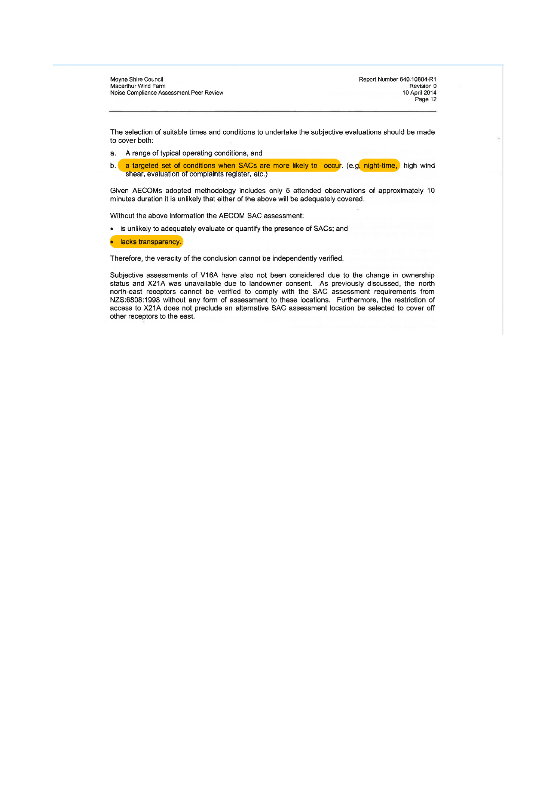
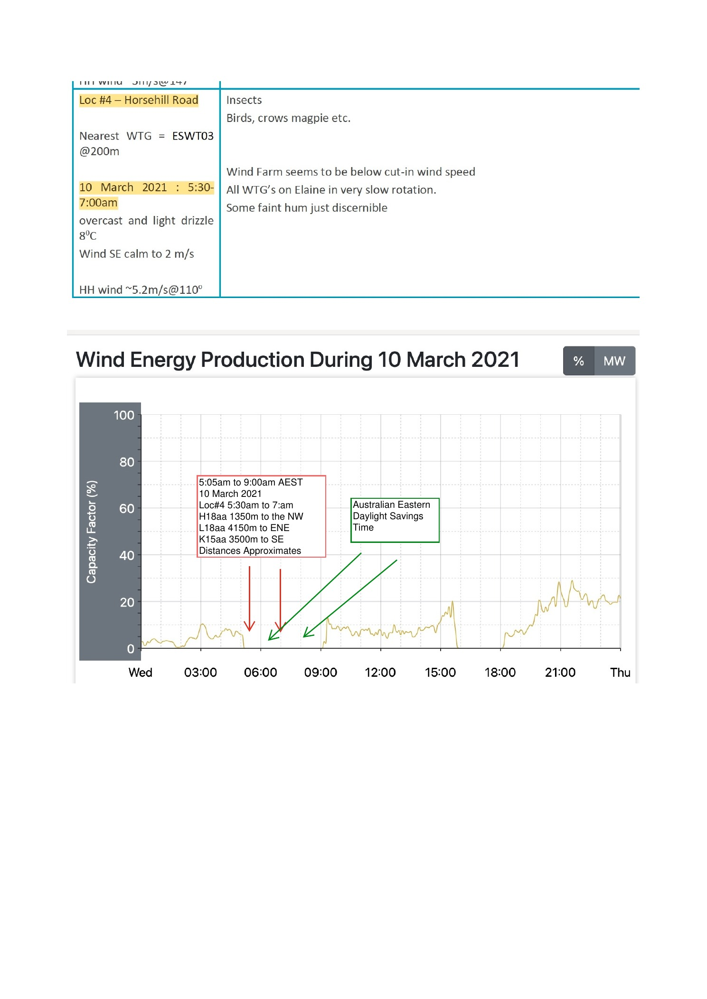
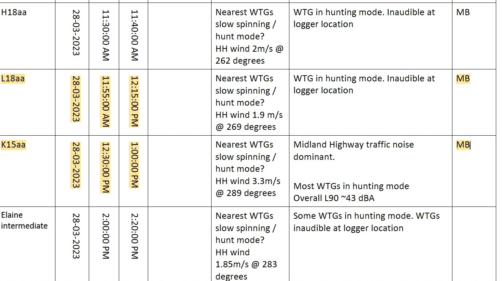
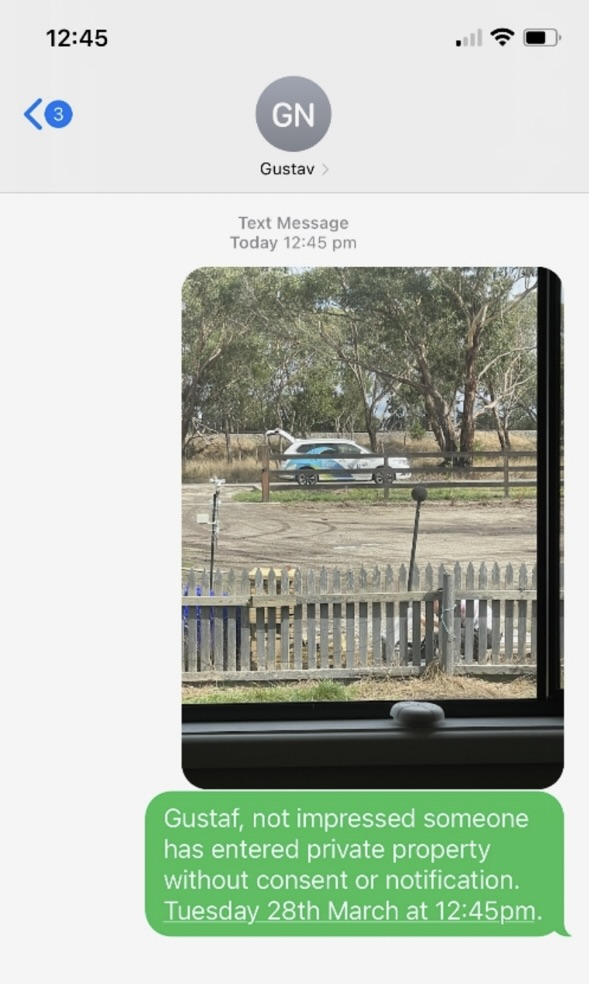
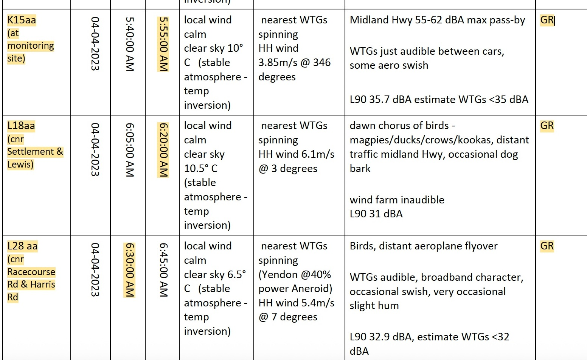
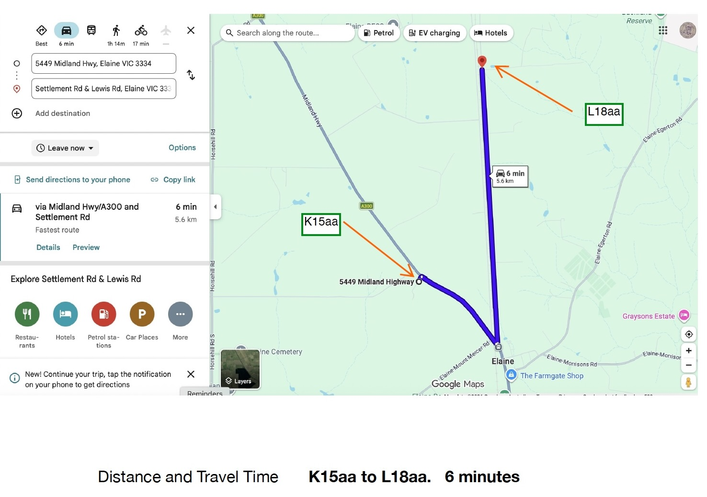
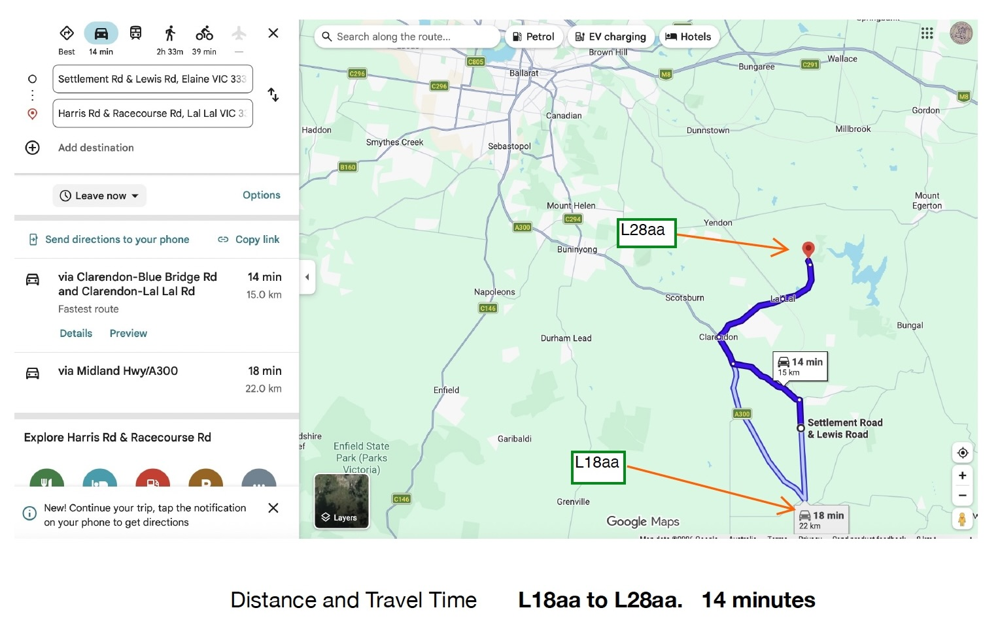
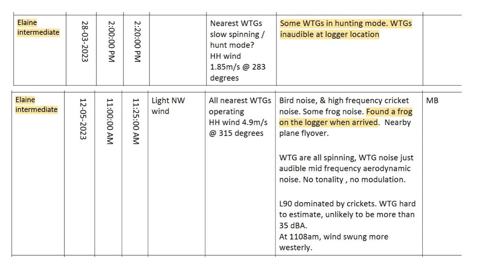

1. NCTP SAC identification procedure
The NCTP records the attended-observation procedure for identifying Special Audible Characteristics, including night-time observations and informative observations near the turbines.

Attended listening observations, objective assessment requirements and the Stage 1 and Stage 2 documentary chronology for the Lal Lal Wind Farm record.
This page should be read after the Start Here, Glossary, Understanding the Record, Framework and Verification pages.
It applies the record method to one issue: the relationship between the approved Noise Compliance Testing Plan, Special Audible Characteristics, attended listening observations, disclosed appendices and the documentary chronology. It must be read in conjunction with the governing framework, NZS 6808:2010, the NCTP page and the primary source documents linked throughout.
Special Audible Characteristics, often shortened to SACs, are distinctive features of wind farm sound, such as tonality, impulsiveness or modulation, that may make a sound more noticeable or intrusive than ordinary broadband sound.
This page does not determine whether SACs were or were not present. It explains the approved observation procedure and reproduces the documentary record showing how attended listening observations were reported.
The approved NCTP required attended observations by a qualified acoustic engineer experienced in wind farm sound.
SAC identification was not only a meter-based exercise. The NCTP required listening observations and reporting of those observations.
The key record is found in the approved NCTP, Stage 1 Elaine report, Stage 2 report and disclosed attended-observation appendices.
During the Lal Lal Wind Farm Public Information Session, Gustaf Reuterswärd explained why attended listening — described as subjective evaluation — forms the gateway to further objective assessment of potential Special Audible Characteristics.
This explanation is reproduced as part of the documentary record. It must be read in conjunction with the approved Noise Compliance Testing Plan (NCTP), the Planning Permit and governing framework, NZS 6808:2010, and the Stage 1 Elaine Appendix D records reproduced later on this page.
Gustaf described attended listening or subjective evaluation as “a Gateway” and “a check … of noise emissions”.
Gustaf stated that “your ears and your brain are remarkable acoustic instruments” and, “in many ways far more sophisticated than the best equipment that we can get”.
Gustaf explained that, where the character of audible wind farm noise warrants further investigation, identification “subjectively through these listening tests” leads to objective screening.
Gustaf then explained a limitation of objective screening: even sophisticated methods “aren’t able to differentiate” between “the wind turbine making a tone” and another noise source that may also produce a positive result.
Gustaf concluded that there are “limitations of the objective” and that this is “perhaps partly why there’s … a subjective screening process”.
The significance of the explanation becomes clear only when it is read with the governing methodology and the records of the observations actually undertaken. The documentary sequence below enables readers to compare:
The Stage 1 Appendix D records show that the attended surveys for K15aa, H18aa and L18aa were recorded on four dates and principally during late-morning or early-afternoon periods, with the separate Location 4 survey recorded in the early morning. Continue to the Elaine Stage 1 Appendix D record.
The endorsed Noise Compliance Testing Plan identifies when attended listening observations are required, where they are to be undertaken and how they form part of the mandatory methodology for assessing Special Audible Characteristics.
The approved Noise Compliance Test Plan set out how SACs were to be identified and reported. The extracts below are included so readers can compare the approved procedure with the observations reproduced in later compliance reports.
The NCTP records the attended-observation procedure for identifying Special Audible Characteristics, including night-time observations and informative observations near the turbines.
The following video excerpt is included as part of the documentary record. During the public information session, Gustaf described attended listening at different times of day and under different conditions, including listening closer to turbines, and explained that subjective listening was used as the gateway to further objective analysis where a particular sound character was heard.
Gustaf also stated that some surveys had been conducted but were not documented in the report because, after reviewing the operational record, SLR determined that the wind farm was not producing electricity and elected not to count those surveys.
The explanation is reproduced because it forms part of the documentary record. Elsewhere on this page, the Stage 1 Appendix D records attended listening observations dated 10 March 2021 and 31 March 2021, while Gustaf’s later public explanation discusses SLR’s decision not to include other attended surveys after reviewing the operational record and concluding that the wind farm was not producing electricity. The documents and public explanation are presented together so readers may compare the approved methodology, the observations reproduced in the Stage 1 report, and Gustaf Reuterswärd’s explanation of how attended surveys were selected for inclusion in that report.
The NCTP required compliance reports to include full details of attended observations conducted for the purpose of identifying where SACs were potentially present in the sound of the wind farm.

The map below is reproduced from Lal Lal Wind Farm documentation and annotated for explanatory purposes. It is not redrawn. The annotations assist readers to understand the relationship between the attended listening observations, compliance monitoring locations and nearest turbines.
Green arrows identify the nearest turbines associated with each compliance monitoring location and Location 4. The orange arrow illustrates the approximate distance between H18aa and the Midland Highway, where one attended observation was recorded as “H18aa – Midland Hwy”.
This annotated map identifies the attended listening observation locations, nearest turbines and the approximate geographical relationship between H18aa and the Midland Highway reference used in Appendix D.

An earlier noise-compliance peer review dated 10 April 2014, prepared by an acoustician, records methodological observations concerning subjective evaluation of Special Audible Characteristics. The document is included as earlier professional context and is not presented as a determination of the later Lal Lal Wind Farm assessments.
The peer review states that suitable subjective evaluations should include both typical operating conditions and targeted conditions when SACs are more likely to occur, including night-time, high wind shear and consideration of the complaints register.
After considering a methodology comprising five attended observations of approximately ten minutes each, the peer review records that the methodology was unlikely to adequately evaluate or quantify SACs and that it lacked transparency.
The peer review concludes that, without the relevant supporting information, the veracity of the SAC conclusion could not be independently verified.
The extract identifies targeted conditions when SACs are more likely to occur, comments on the limited attended-observation methodology, and records concerns about transparency and independent verification.

The Stage 1 Elaine report records unattended compliance monitoring at K15aa, H18aa and L18aa between 9 March 2021 and 13 May 2021. For those three Elaine compliance monitoring locations, Appendix D records attended listening surveys dated only 9 March 2021, 10 March 2021, 31 March 2021 and 11 June 2021. These are the only attended listening surveys for K15aa, H18aa and L18aa recorded in the Stage 1 report. The 11 June 2021 survey occurred after unattended compliance monitoring had concluded on 13 May 2021; accordingly, no operational monitoring data from the Stage 1 monitoring period is available for comparison with those observations.
Within the Elaine section, Appendix D also records an attended survey at Location 4 — Horsehill Road, which is separately reproduced below. Appendix D additionally includes attended listening surveys from the separate Yendon section of the wind farm. Those Yendon observations are not observations at the Elaine compliance monitoring locations, and the Stage 1 Elaine report contains no corresponding Yendon unattended monitoring data against which they can be compared.
The reproduced Stage 1 Appendix D records for the Elaine compliance monitoring locations comprise attended listening surveys dated 9 March 2021, 10 March 2021, 31 March 2021 and 11 June 2021. No additional attended listening surveys for K15aa, H18aa or L18aa are recorded in the Stage 1 report.
The records reproduced on this page do not show an attended listening survey dated during April or May 2021, and do not show a night-time attended observation set for the Elaine compliance monitoring locations. The 11 June 2021 observations occurred after unattended compliance monitoring concluded on 13 May 2021, and therefore have no corresponding operational monitoring data from that monitoring period.
Appendix D separately records an attended survey at Location 4 — Horsehill Road and also includes attended listening surveys from the Yendon section. The Yendon surveys concern locations outside the Elaine compliance monitoring locations, and the Stage 1 Elaine report does not include corresponding Yendon unattended monitoring data. They are therefore identified as part of the contents of Appendix D but are not treated on this page as Elaine compliance monitoring observations. This page records the documentary chronology and compares the mandatory NCTP procedure with the observations reported for the Elaine compliance monitoring locations.
The annotated AEMO figures reproduced on this page were developed progressively during the Trustee’s documentary reconciliation. The initial analytical figures compared the attended observation times recorded in Appendix D with the publicly available AEMO wind energy production record and identified the periods during which the wind farm was not shown as producing electricity.
Following the Lal Lal Wind Farm Public Information Session, Gustaf Reuterswärd explained that the attended survey times should also be considered in light of the one-hour difference between Australian Eastern Daylight Saving Time (AEDT), under which the surveys were undertaken, and Australian Eastern Standard Time (AEST), which he believed was used by the AEMO operational record.
The analytical figures were subsequently revised to identify both the recorded survey times and the corresponding one-hour daylight saving adjustment discussed during the information session. The underlying AEMO production traces were not altered. The additional annotations are included solely to assist readers in comparing the source records and the later public explanation.
Table 3 of the Stage 1 report records the monitoring period for K15aa, H18aa and L18aa as 9 March 2021 to 13 May 2021, with approximately 54 days of monitoring.

Appendix D records an attended listening survey at Location 4 — Horsehill Road on 10 March 2021 between approximately 5:30 am and 7:00 am. Within the Elaine section of Appendix D, Location 4 is the only attended survey location reproduced in addition to the three compliance monitoring locations K15aa, H18aa and L18aa.
The annotated figure below places the Location 4 survey record beside the publicly available AEMO wind energy production trace for 10 March 2021. The earlier analytical version identified the recorded survey times against the periods when the wind farm was not shown as producing electricity. Following the Public Information Session, the figure was revised to also mark the one-hour relationship between Australian Eastern Standard Time and Australian Eastern Daylight Saving Time discussed by Gustaf Reuterswärd. The underlying AEMO production trace is unchanged.
During the Public Information Session, Gustaf Reuterswärd addressed the attended survey undertaken on 10 March 2021 and its relationship to the operational record. The following excerpt is reproduced as part of the documentary record so it can be considered together with the Appendix D survey entry and the annotated AEMO comparison below.

Appendix D includes an observation recorded as “H18aa – Midland Hwy” on 10 March 2021. Figure 3 — Attended listening observation locations map, reproduced above, identifies H18aa and illustrates its approximate geographical relationship to the Midland Highway reference used in that observation record.

The extracts below reproduce the grouped Stage 1 Appendix D attended observations for K15aa, H18aa and L18aa. They show daytime observation groupings on 9 March, 10 March and 31 March 2021.


Appendix D also includes attended observations dated 11 June 2021. Those observations occurred after the Stage 1 unattended compliance monitoring period recorded in Table 3 had concluded on 13 May 2021. Accordingly, no operational monitoring data from the Stage 1 monitoring period is available for comparison with the 11 June 2021 observations. This page records that documentary chronology and does not infer the reason for the later survey date.

During the SLR Public Information Session, Gustaf Reuterswärd responded to a question concerning the attended observations undertaken on 10 March 2021 and 31 March 2021 and their relationship to the AEMO operational record.
This annotated figure compares the attended listening times reproduced in the Stage 1 post-construction report with the publicly available wind energy production record for 31 March 2021. The earlier analytical version identified the recorded survey times against the periods when the wind farm was not shown as producing electricity. Following the Public Information Session, the figure was revised to also illustrate the corresponding one-hour daylight saving adjustment discussed by Gustaf Reuterswärd. The underlying AEMO production trace is unchanged.

The Stage 2 material records extended monitoring at some locations into January 2024 and includes additional locations not used as the original Elaine compliance monitoring locations, including J14aa, L14aa and Elaine Intermediate. This page records those locations as they appear in the disclosed documentary material.
Table 6 records monitoring periods for locations including N31ab and M29aa extending into January 2024, while other Elaine locations are recorded for March to May / June 2023 periods.

The image below reproduces the final page of the disclosed Stage 2 attended-observation appendix. The final attended observations reproduced in the appendix are dated 1 June 2023. This image is included to identify the documentary endpoint of the disclosed attended observation record.
Documentary chronology: Table 6 above records monitoring continuing beyond 1 June 2023 for some locations, including the extended monitoring periods highlighted for N31ab and M29aa. The disclosed attended-observation appendix reproduced in the report concludes with observations dated 1 June 2023. This page records that documentary chronology only.

The disclosed Stage 2 attended-observation appendix records the following sequence on 28 March 2023:
| Location | Recorded commencement | Recorded conclusion | Recorded observer |
|---|---|---|---|
| H18aa | 11:30 am | 11:40 am | MB |
| L18aa | 11:55 am | 12:15 pm | MB |
| K15aa | 12:30 pm | 1:00 pm | MB |
| Elaine Intermediate | 2:00 pm | 2:20 pm | Not identified in the reproduced row |
Separately, the occupier of L18aa retained a screenshot of a text message and photograph timestamped 12:45 pm on Tuesday, 28 March. The message records the occupier's concern that a person had entered the property without consent or notification. The photograph shows a vehicle within the property as recorded by the occupier.
The 12:45 pm timestamp falls within the period recorded in the Stage 2 appendix for the K15aa attended observation, from 12:30 pm to 1:00 pm. The screenshot and appendix extract are reproduced together so readers can compare the two contemporaneous records.
The appendix extract records observations at H18aa, L18aa, K15aa and Elaine Intermediate. It records L18aa from 11:55 am to 12:15 pm and K15aa from 12:30 pm to 1:00 pm.

The supplied screenshot records a text message and photograph timestamped 12:45 pm on 28 March 2023. The message records the occupier's concern about entry onto the property without consent or notification.

The disclosed Stage 2 attended-observation record documents the following sequence of observations undertaken on 4 April 2023 by the Senior Acoustician identified in the appendix as GR.
| Location | Recorded commencement | Recorded conclusion | Interval before next observation |
|---|---|---|---|
| K15aa | 5:40 am | 5:55 am | 10 minutes before L18aa commenced |
| L18aa | 6:05 am | 6:20 am | 10 minutes before L28aa commenced |
| L28aa | 6:30 am | 6:45 am | — |
The accompanying mapping extracts indicate approximate driving times of 6 minutes between K15aa and L18aa and 14 minutes between L18aa and L28aa.
The recorded chronology therefore allows 10 minutes between the conclusion of the L18aa observation at 6:20 am and the commencement of the L28aa observation at 6:30 am. That interval would also encompass activities ordinarily associated with completing one attended observation and commencing another, including concluding the listening assessment, recording field notes, returning to the vehicle, travelling between locations, parking and commencing the subsequent observation.
The appendix extract records observations at K15aa from 5:40 am to 5:55 am, L18aa from 6:05 am to 6:20 am, and L28aa from 6:30 am to 6:45 am.

The mapping extract records an approximate driving time of 6 minutes between the two locations.

The mapping extract records an approximate driving time of 14 minutes between the two locations.

The Stage 2 attended-observation appendix contains two separate entries for Elaine Intermediate that refer to a logger at that location.
For 28 March 2023, the appendix records an attended observation from 2:00 pm to 2:20 pm and states that some wind turbines were in hunting mode and were inaudible at the logger location.
For 12 May 2023, the appendix records an attended observation from 11:00 am to 11:25 am, identifies MB as the observer, and includes the note: “Found a frog on the logger when arrived.”
The two entries are reproduced together below so readers can see the separate dated references to a logger at Elaine Intermediate. The Stage 2 Elaine map reproduced in the report does not identify the location named “Elaine Intermediate”. For that reason, the approximate location is shown using the later On / Off Testing report solely as a map reference for the named location. The On / Off report is not otherwise relied upon in this section.


The NCTP required compliance reports to include full details of any supplementary procedures adopted as part of conducting the compliance assessment.
The Environment Protection Amendment (Wind Turbine Noise) Regulations 2022 distinguish alternative monitoring points from post-construction noise assessments. This extract is included only to orient readers to the regulatory wording.
The NCTP required compliance reports to include full details of any supplementary procedures adopted as part of conducting the compliance assessment.

This extract identifies the regulatory wording concerning alternative monitoring points and post-construction noise assessments.

Verification question: Does the disclosed documentary record enable readers to verify that the mandatory Special Audible Characteristic assessment requirements of the Noise Compliance Testing Plan were undertaken and documented in accordance with the endorsed methodology?
| Issue | Stage 1 Elaine report | Stage 2 report |
|---|---|---|
| Monitoring period | Recorded for K15aa, H18aa and L18aa from 9 March 2021 to 13 May 2021. | Recorded for multiple locations, including N31ab and M29aa extending into January 2024. |
| Attended observations | Appendix D records attended surveys at K15aa, H18aa and L18aa on the four dates identified above, together with Location 4 — Horsehill Road and other named locations. It does not report an attended observation near the turbines. | Appendix material reproduces selected attended observations including M29aa, H18aa, Elaine Intermediate and K15aa. |
| Additional / intermediate locations | Within the Elaine section, Location 4 — Horsehill Road is the only additional attended survey location recorded apart from K15aa, H18aa and L18aa. Appendix D also includes observations associated with Yendon. | Introduces additional locations including J14aa, L14aa and Elaine Intermediate. |
| Geographical context | Annotated material assists readers to understand the Location 4 and H18aa — Midland Highway references, the 10 March AEMO timing comparison and the relationship to the nearest turbines. | Later On / Off report map is used solely to identify the approximate Elaine Intermediate location. |
This page reproduces and explains the documentary record relating to Special Audible Characteristics. It assists readers in understanding the approved Noise Compliance Test Plan, the attended listening observations reproduced within the disclosed reports, and the chronology of those documents.
The page is intended as an explanatory guide to the documentary record. It does not seek to draw conclusions beyond the documents reproduced and described.
This page is a guide. The detailed record remains in the executed documents and source material.
Unlike sound level measurements alone, the assessment of Special Audible Characteristics requires attended observations because some sound characteristics are initially identified through listening before any further objective assessment is undertaken where necessary.
The pre-construction assessment and earlier peer-review record provides context for how Special Audible Characteristics were considered before later operational observations and objective analysis.
Special Audible Characteristics, attended observations, monitoring locations and statements concerning what occurred during assessment activities were among the matters included in the Trustee's later procedural-fairness Notice to the SLR Technical Director. The response status is recorded in Operational Correspondence.
The record includes a public gateway to the documentary records of EPA Victoria, the Department of Transport and Planning, Moorabool Shire Council and the Australian Energy Infrastructure Commissioner. Agency pages present the correspondence, Freedom of Information material and source documents currently available within the record.